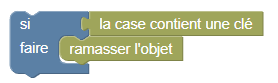

Balouk must pick up all the keys and go to the door
BUT: the number of blocks is limited, and the keys are put pretty much everywhere !!
Fortunately, here is a new block: with the "IF-DO" block you can test the presence of a key on the box and take the key only if the box contains one
